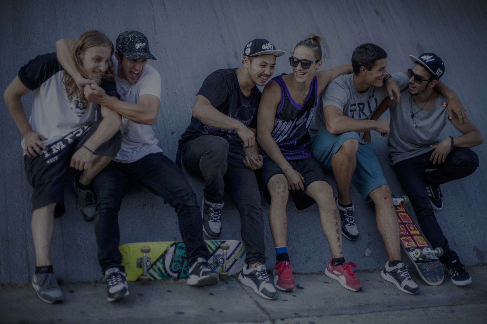

Así surgió Farang. Éramos un grupo de amigos de diferentes rincones del mundo que se unían para viajar, explorar y crear. Con demasiada frecuencia nos encontrábamos durmiendo hombro con hombro con una docena de amigos en el piso de algún apartamento en un país extranjero, anticipando ansiosamente cualquier aventura que se presentara.
En 2011, Tempest abrió la primera de sus innovadoras Tempest Freerunning Academies en Los Ángeles. Con el equipo profesional más condecorado del mundo, algunos de los videos de freerunning más vistos de todos los tiempos y una nueva Academia más grande que abre en South Bay, el equipo puso sus ojos en perfeccionar lo único que realmente necesita un freerunner. 2014 vio el lanzamiento del ahora icónico zapato NLS-1. Diseñado por freerunners para el freerunning, elevó el freerunning al siguiente nivel y los exclusivos #orangebottoms fueron un tributo a la historia de la familia Tempest.
3RUN es un equipo de parkour profesional líder en el mundo que se especializa en las artes del movimiento: parkour / carrera libre, artes marciales y acrobacias urbanas. Proporcionar secuencias de movimiento visualmente provocativas de alto impacto para cine, televisión, eventos en vivo y campañas fotográficas. 3RUN busca romper el molde: empujar los límites del rendimiento con una nueva generación de atletas de rendimiento de una manera innovadora y emocionante.